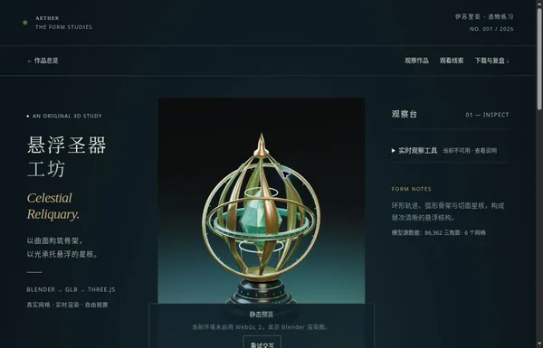
网页截图WEB DESIGN
网页设计库
13个介绍模型本身的网页。页面与模型建立关系，原页面和版本历史保持不变。
THE COLLECTION / 02没有符合条件的项目。清空搜索或选择全部。
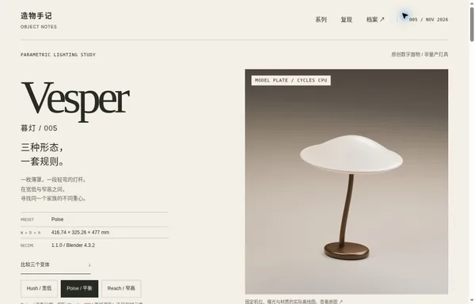
网页截图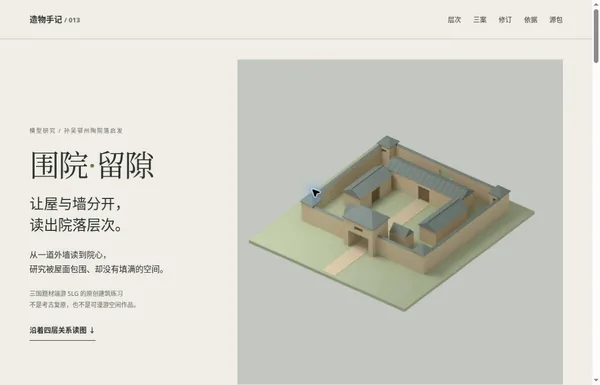
网页截图模型介绍页
围院·留隙 ↗
外墙—通隙—内屋—院心；门前、庭内、侧院作业意向三种原创布局。与012开放前场不同，研究内向空间与边界关系。
查看验证说明
静态优先；按需模型观察与无GL备用分层，GPU/真机未验
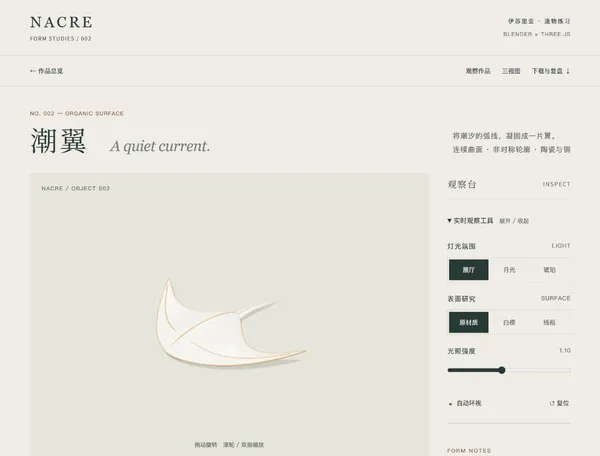
网页截图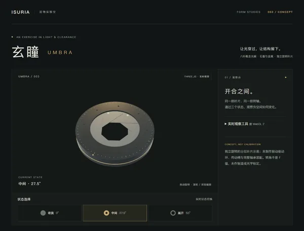
网页截图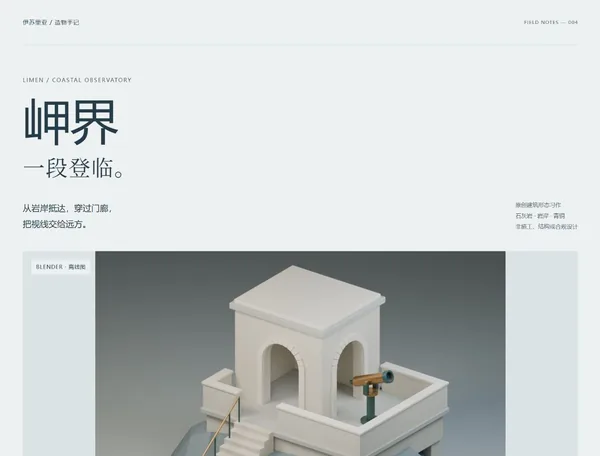
网页截图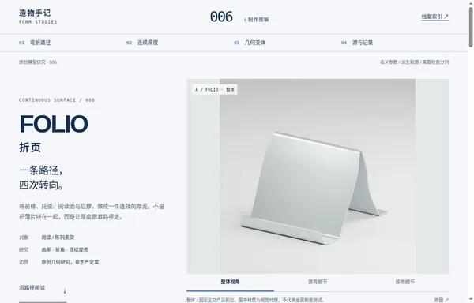
网页截图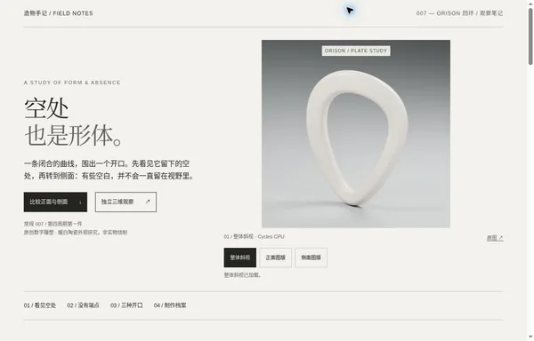
网页截图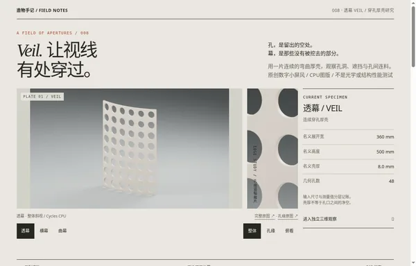
网页截图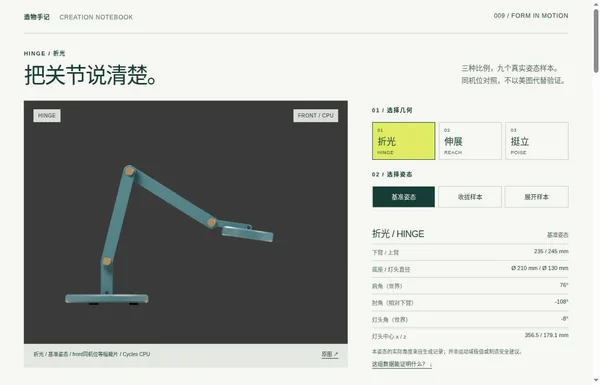
网页截图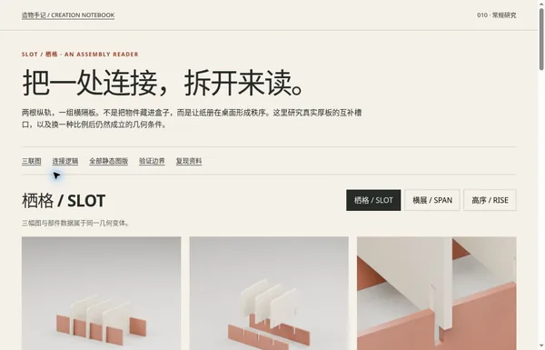
网页截图模型介绍页
栖格 ↗
用真实互补槽口连接厚板，三个几何变体改变长度、高度与隔板数量。
查看验证说明
云浏览器键盘/Back/深链/实际资源失败后同会话重试/320与390 CSS宽/noJS已验；非真机。
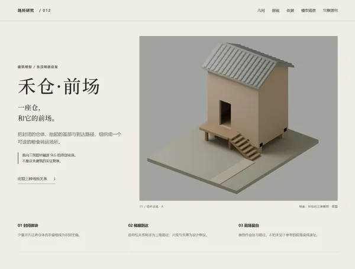
网页截图模型介绍页
禾仓·前场 ↗
以河南新密东汉陶明器为主参考，区分仓体实物依据、彩绘梯廊转译与原创开放前场；三种几何方案改变仓体比例、梯廊和前场关系。
查看验证说明
静态图录为主，单件Three观察器按需开启；不是全页3D空间设计。
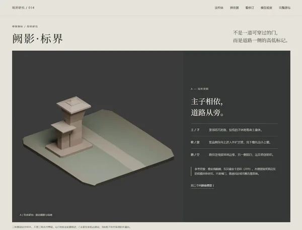
网页截图